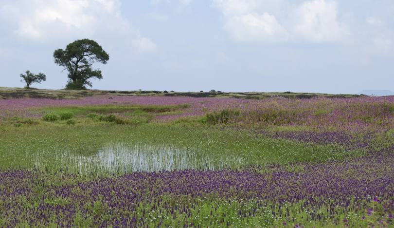

Kaas Plateau, also known as the Valley of Flowers of Maharashtra, is a UNESCO World Natural Heritage Site located in the Satara district of Maharashtra, India. It is famous for its seasonal bloom of endemic flowers and plants during the monsoon season.
Every year, between August and October, the plateau is covered with a blanket of vibrant flowers of various species, creating a stunning, colorful landscape. It is home to more than 850 species of flowering plants, some of which are rare and endangered.
The best time to visit Kaas Pathar is from late August to early October, when the flowers are in full bloom. It’s a perfect destination for nature lovers, photographers, and those looking for a peaceful retreat amidst nature. The plateau experiences a natural cycle of extreme conditions, with wet water-logged cool monsoons, very dry hot summer (45 °C) and dry winter (5 °C). The soil is acidic only a thin layer on top of laterite rock underneath. Extreme seasonality influences the ecology of the site.
Learn more about Kaas Pathar at Maharashtra Tourism.